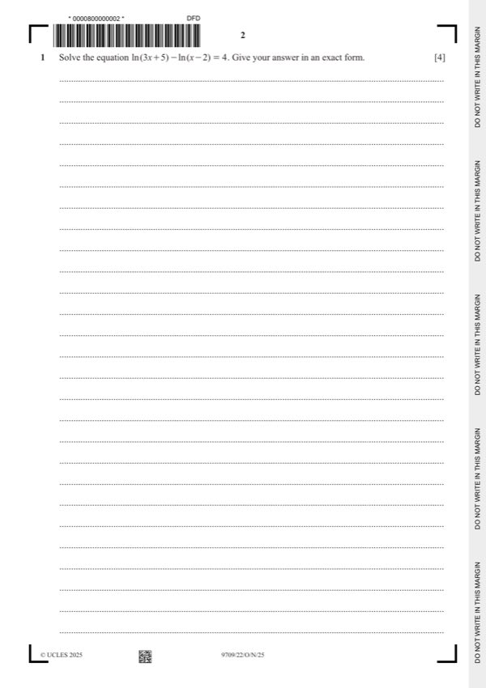

Question 1

Original paper page 2
Part 1 — solution
- [M1] Obtain/use: Apply relevant logarithm property *
- [A1] Allow recovery from an incorrect log statement
- [DM1] Must be in correct form, condone one sign slip
- [A1] Or exact equivalent
Mark points
- [M1] Obtain/use: Apply relevant logarithm property *
- [A1] Allow recovery from an incorrect log statement
- [DM1] Must be in correct form, condone one sign slip
- [A1] Or exact equivalent
Part 1 — solution
Answer: 1 1
1 1
Example 2: consider e2a − e− a − e−4a − 5
Mark points
- Correct result: 1 1